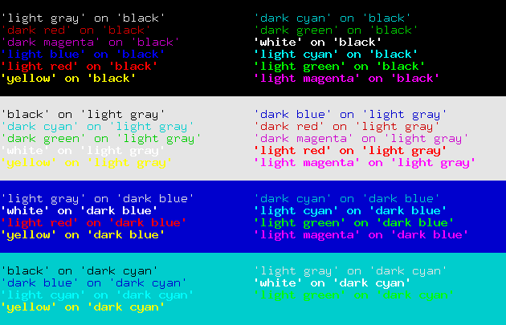
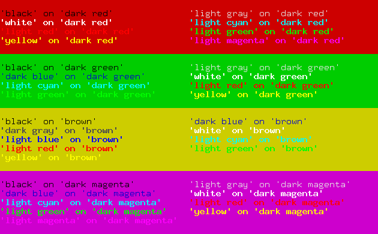

Display Attributes¶
Urwid supports a number of common display attributes in monochrome, 16-color, 88-color and 256-color modes.
You are encouraged to provide support for as many of these modes as you like, while allowing your interface to degrade gracefully by providing command line arguments or other interfaces to switch modes.
When setting up a palette with MainLoop (or directly on your screen instance), you may specify attributes for 16-color, monochrome and high color modes. You can then switch between these modes with screen.set_terminal_properties(), where screen is your screen instance or MainLoop.screen.
See also
Using Display Attributes¶
Once you have defined a palette you may use the its display attribute names anywhere that expects a display attribute. When no display attribute is defined None is used as a default display attribute.
None will typically be rendered with the terminal’s default foreground and background colors.
You can also specify an exact foreground and background using an AttrSpec instance instead of a display attribute name. Using AttrSpec instances in your code may be trickier than using your screen’s palette because you must know which mode (number of colors) the screen is in.
Text Markup¶
A Text widget can specify which display attributes each part of the text will use with the format defined in Text class reference. Some examples:
Text(u"a simple string with default attribute")
The string and space around will use the None default display attribute which usually appears in the terminal’s default foreground and background.
Text(('attr1', u"a string in display attribute attr1"))
The string will appear with foreground and backgrounds specified in the display module’s palette for 'attr1', but the space around (before/after) the text will appear with the default display attribute.
Text([u"a simple string ", ('attr1', u"ending with attr1")])
The first three words have the default display attribute and the last three words have display attribute 'attr1'.
Text([('attr1', u"start in attr1 "), ('attr2', u"end in attr2")])
The first three words have display attribute 'attr1' and the last three words have display attribute 'attr2'.
Text(('attr1', [u"nesting example ", ('attr2', u"inside"), u" outside"]))
When markup is nested only the innermost attribute applies. Here "inside" has attribute 'attr2' and all the rest of the text has attribute 'attr1'.
Assigning Display Attributes with AttrMap¶
If you want a whole widget to be assigned a display attribute, or if you want to change one or more display attributes to other display attributes, you can wrap your widget in an AttrMap widget. Text widgets have no way to specify a display attribute for the whitespace around the text caused by alignment and wrapping so AttrMap may be used. Some examples:
AttrMap(Text(u"hello"), 'attr1')
The whole Text widget will have display attribute 'attr1' including whitespace around the "hello" text.
AttrMap(Text(('attr1', u"hello")), 'attr2')
The u"hello" text will appear with display attribute 'attr1' and all surrounding whitespace will appear with display attribute 'attr2'.
AttrMap(Text([('attr1', u"hello"), u" world"]), {'attr1': 'attr2'})
The AttrMap widget will apply display attribute 'attr2' to all parts of the Text widget that are using 'attr1'. The result is the "hello" text appearing with display attribute 'attr2' and all other text and whitespace appearing in the default display attribute.
AttrMap can also change display attributes differently when they are in focus. This can be used to “highlight” one or more widgets to make your interface more user friendly. To use this feature set the focus_map parameter when creating the AttrMap widget.
Foreground and Background Settings¶
| Supported by Terminal | xterm / gnome-term | rxvt | linux console | others |
|---|---|---|---|---|
| 16 standard foreground colors | YES | YES | YES | very widely supported |
| 8 standard background colors | YES | YES | YES | very widely supported |
| default foreground/background | YES | YES | YES | widely supported |
| bold, underline, standout | YES | YES | standout | widely supported |
| “bright” background colors | YES | urxvt | some support | |
| 256-color foreground/background | YES | some support | ||
| 88-color foreground/background | w/palette setting | urxvt | limited support | |
| RGB palette setting | YES | limited support |
16 Standard Foreground Colors¶
- 'black'
- 'dark red'
- 'dark green'
- 'brown'
- 'dark blue'
- 'dark magenta'
- 'dark cyan'
- 'light gray'
- 'dark gray'
- 'light red'
- 'light green'
- 'yellow'
- 'light blue'
- 'light magenta'
- 'light cyan'
- 'white'
8 Standard Background Colors¶
- 'black'
- 'dark red'
- 'dark green'
- 'brown'
- 'dark blue'
- 'dark magenta'
- 'dark cyan'
- 'light gray'
Default Foreground and Background¶
- 'default' (or simply '')
'default' may be specified as a foreground or background to use a terminal’s default color. For terminals with transparent backgrounds 'default' is the only way to show the transparent background. There is no way to tell what the default colors are, so it is best to use default foregrounds and backgrounds together (not with other colors) to ensure good contrast.
Bold, Underline, Standout¶
- 'bold'
- 'underline'
- 'standout'
These settings may be tagged on to foreground colors using commas, eg: 'light gray,underline,bold'
For monochrome mode combinations of these are the only values that may be used.
Many terminals will turn foreground colors into their bright versions when you use bold, eg: 'dark blue,bold' might look the same as 'light blue'. Some terminals also will display bright colors in a bold font even if you don’t specify bold. To inhibit this you can try setting bright_is_bold=False with BaseScreen.set_terminal_properties(), but it is not always supported.
'standout' is usually displayed as the foreground and background colors reversed.
“Bright” Background Colors¶
Warning
Terminal support for bright background colors is spotty, and they generally should be avoided. If you are in a high-color mode you might have better luck using the high-color versions 'h8', 'h9', 'h10', ..., 'h15'.
- 'dark gray'
- 'light red'
- 'light green'
- 'yellow'
- 'light blue'
- 'light magenta'
- 'light cyan'
- 'white'
256-Color Foreground and Background Colors¶
In 256-color mode you have the 16 basic colors, a 6 * 6 * 6 color cube and a gray scale with 24 entries (white and black not included).
The color cube is weighted towards the brighter colors, with RGB points at 0, 0x5f, 0x87, 0xaf, 0xd7 and 0xff. The hex characters '0', '6', '8', 'a', 'd' and 'f' are used as short-forms for these values.
High colors may be specified by their index 'h0', ..., 'h255' or with the shortcuts for the color cube '#000', '#006', '#008', ..., '#fff' or gray scale entries 'g0' (black from color cube) , 'g3', 'g7', ... 'g100' (white from color cube).
See also
The palette_test.py example program
88-Color Foreground and Background Colors¶
In 88-color mode you have the 16 basic colors, a 4 * 4 * 4 color cube and a gray scale with 8 entries (white and black not included).
The color cube is weighted towards the brighter colors, with RGB points at 0, 0x8b, 0xcd, and 0xff. The hex characters '0', '8', 'c' and 'f' are used as short-forms for these values.
High colors may be specified by their index 'h0', ..., 'h87' or with the shortcuts for the color cube '#000', '#008', '#00c', ..., '#fff' or gray scale entries 'g0' (black from color cube), 'g19', 'g35', ... 'g100' (white from color cube).
See also
The palette_test.py example program
RGB Palette Setting¶
A few terminals have the ability to customize the terminal palette’s RGB values with raw_display.Screen.modify_terminal_palette(). There is no automatic way to tell if this is supported by a user’s terminal, so this feature shouldn’t be relied on.
raw_display.Screen.reset_default_terminal_palette() is used to reset the palette in the palette_test.py example program when switching modes.
Recommended Combinations¶
Neutral Backgrounds¶
Choose colors that are fairly neutral with medium contrast for most of your application. It is good to use one background as a default for text, another for edit boxes and a third for selected edit boxes.
Foreground colors shown here in bold text will appear as bold text on many terminals. Bold fonts are often more difficult to read so those foreground colours should be used sparingly.
Bright Backgrounds¶
Use bright colors to draw attention to small areas with important information. They are good for buttons and selected widgets (other than edit boxes).

Table of contents
- Manual